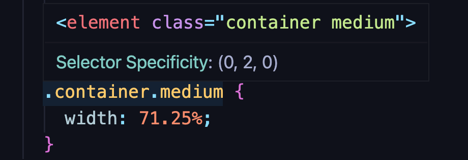

Mit Hilfe von HTML ("„Hypertext Markup Language“"), kann die komplette Struktur einer Website vordefiniert werden.
CSS („Cascade Style Sheet “) ist eine Stylesheet-Sprache, die das Aussehen/Layout von HTML-Dokumenten definiert.
Visual Studio Code Playlist by CodeStackr
Es ist von Vorteil sich gut mit seiner integrierten Entwicklungsumgebung (IDE, von englisch integrated development environment) auszukennen.
Wie die meisten, bevorzuge ich Visual Studio Code. Hier findest du eine Playlist mit vielen Tipps & Tricks, die dir den Einstieg in die Software erleichtern.
HTML Character-Enteties
Hier eine super Seite, mit Informationen zu den HTML-Enteties
Selektoren werden in CSS verwendet um HTML-Elemente auszuwählen. Selektoren werden verwendet, um die HTML-Elemente gezielt zu verwenden, um bestimmte styles darauf anzuwenden.
Universal Selector -
Wählt alles aus * {
color : black ;
}
Element (Type) Selector -
Wählt alle Instanzen eins Tags oder Elements der Seite. img {
width: 400px;
height: 200px ;
}
Class Selector -
Wählt alle Klassen, mit dem vergebenen Namen aus .container {
background-color: lightgreen ;
}
ID Selector-
Wählt spezifische Elemente, mit dem vergebenen Namen aus #input-field {
border: green 2px solid ;
width: 250px;
height: 150px ;
}
Selector List -
Wählt alle Elemente der Liste aus h1, div, p {
text-align: left;
color: darkgreen;
}
Descendant Combinator -
Wählt verschachtelte Elemente aus p a {
color: tomato;
}
General Sibling Selector(~) -
Dieser Selektortyp wählt alle Elemente aus, die Geschwister eines bestimmten Elements sind. div ~ p {
color: darkgreen;
}
}
Adjacent Sibling Combinator -
Wählt nur das Element aus, dem das vorherige Element unmittelbar vorausgeht. h3 +p {
color: yellow;
}
(Direct) Child Combinator -
Wählt nur direkte Kinder des übergeordneten Elements aus. div > h3 {{
color: tomato;
}
Attribute Selectors
a[href="ninabraunger.de"] -
Wählt nur die Elemente aus, die auf den bestimmten Link zeigen. a[href="ninabraunger.de"] {color: lightblue;
}
a[href*="brownie"] -
Der Stern-tag gibt an, dass der vorangehende Wert irgendwo im Wert des Attributs erscheinen muss. a[href*="brownie"] {
color: brown;
}
a[href^="https"] -
Der Anker-tag gibt an, dass der Anfang einer Zeichenfolge mit gewähltem Wort beginnen muss. a[href^="https"] {
text-decoration: 2px solid;green;
padding-bottom: 15px;
}
a[href$=".jpg"] -
Der Dollar-tag gibt an, dass der Ende einer Zeichenfolge mit gewähltem Wort enden muss. a[href$=".jpg"] {
text-decoration: 2px solid;
green;
padding-bottom: 15px;
}
Pseudoklassen
CSS-Pseudoklassen sind keine eigenen Selektoren, sondern Schlüsselwörter, die einem CSS-Selektor hinzugefügt werden und es Entwicklern ermöglichen, einen speziellen Zustand (visited, fokus, hover) des/der ausgewählten Elemente(s) anzugeben.
a:hover -
Wenn der User mit der Maus, über den (in diesem Falle) Link fährt.
a:hover {
color: green;
}
a:focus -
Wenn der User mit etwas fokussiert (z.B. Maus-, Tastatur- oder andere Eingabeevents).
a:focus {
color: pink;
}
h3:nth-of-type(2n) -
:nth-of-type() wählt Elemente (Selektoren) eines bestimmten Typs basierend auf ihrer Position/Position innerhalb einer Gruppe von Geschwistern aus.Hier wählt man jedes zweite H3-element aus einer Gruppe von Geschwister-H3 aus.
h3:nth-of-type(2n) {
background-color: tomato;
}
li:first-of-type -
:first-of-type() wählt das erste Element eines bestimmten Typs aus.
li:first-of-type {
color: green;
}
a:visited -
Wenn der Link bereits besucht wurde
a:visited {
color: lightgrey;
}
Pseudo-elements
Pseudoelemente sind Schlüsselwörter, die einem Selektor hinzugefügt werden, mit denen wir einen bestimmten Teil der ausgewählten Elemente formatieren können. Bei ihnen werden zwei Doppelpunkte :: anstelle von einem vorangestellt.
Pseudo-Elemente werden verwendet, um Abschnitte oder einen bestimmten Teil eines Elements zu stylen (der erste Buchstabe in einem Wort, die erste Zeile usw.).
p::first-letter -
Stellt den ersten Buchstaben in der ersten Zeile eines Block-Level-Elements dar, solange er nicht nach einem Bild oder einer Tabelle kommt.
p::first-letter {
color: red;
}
li::selection-
Wenn der User etwas auswählt (z.B. markiert) .
li::selection{
color: white;
background-color: darkblue;
}
selector::before // ::after-
Repräsentiert ein formatierbares untergeordnetes Pseudoelement unmittelbar vor bzw. nach dem eigentlichen Inhalt des Ursprungselements..
h1::after{
color: black;
text-transform: uppercase;
}
Selektorspezifität (Priorität, um andere zu überschreiben)
Spezifität bedeutet in diesem Sinne, wie der Browser den Stil berechnet und auf HTML-Elemente anwendet. (Welcher Selektortyp hat so eine hohe Priorität, dass er die Eigenschaft eines anderen Selektors überschreiben kann?)
ID (#) X-0-0 (Anzahl der ID-Selektoren im Selektor)
Class (.) 0-Y-0 (Anzahl der Klassenselektoren, Attributselektoren und Pseudoklassen)
Type Selector(Html Tag name) 0-0-Z (Anzahl der Typselektoren und Pseudoelemente)
Um besser zu verstehen, wie die Berechnung funktioniert, ist wichtig, zu wissen, dass die Priorität links höher ist ist,
also X > Y > Z

Wenn man in Visual Studio Code über die Selectoren hovert, kann man die Selector-Specificity sehen.
Der Universalselektor (*) und die Kombinatoren (+, >, ~, Leerzeichen) haben keinen Einfluss auf die Spezifität.
Responsive Website-Tipps
html{
font-size: 62.5%
}
Rem-Tipp: Zu Beginn, die font-size auf 62,5% setzen,
denn 62,5% von 16px (default), sind 10px. Dadurch multiplizieren wir quasi nun immer mit 10. Wenn wir dann unten etwas aus 15rem setzen, entspricht dies 150px.
.box{
width: %
height: vh
}
Wir verwenden am besten immer vh (viewport Ansicht) bei der height, da block-level-elements als Standard (width: 100% und height: 0 haben) --> 100% von 0 wären demnach 0.